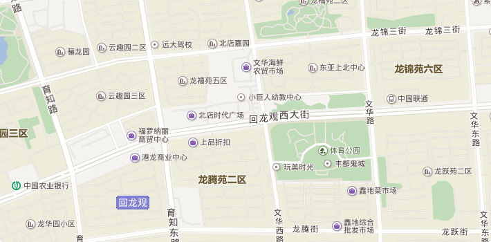

<!DOCTYPE html>
<html style="height: 100%;">
	<head>
		<meta charset="utf-8" />
		<meta name="viewport" content="width=device-width">
	    <!--可视区宽度等与设备的宽度，禁止缩放，缩放比例1:1-->
	    <meta name="App-config" content="fullscreen=yes,useHistoryState=yes,transition=yes">
	    <!--保留系统的一些配置（历史记录，动画效果，全屏）-->
	    <meta name="apple-mobile-web-app-capable" content="yes"><!--苹果专有的meta信息，允许网页以APP形式运行-->
	    <meta name="apple-mobile-web-app-status-bar-style" content="black"><!--苹果专有的，
	    	头部bar的样式-->
        <title>华海地产</title>
        <script src="../../script/jquery_2_1_4.js"></script>				
		<script type="text/javascript" src="../../script/api.js"></script>
		<script type="text/javascript" src="../../script/app.js"></script>
	</head>
	<body style="height: 100%;">				
		<div class="maps" id="maps" style="width:100%;height:100%;">
			<!---->
		</div>				
	</body>

<script type="text/javascript" src="http://api.map.baidu.com/api?v=2.0&ak=LhUmzgoEWQGV6sz57ZivXSFE"></script>
<script>
	var id='';//店铺ID
	var map='';	
	apiready = function(){
		id=api.pageParam.id;				
	    map = new BMap.Map("maps");	
	    
		//加载房产首页
		houseInfo();				
	};
	//加载房产信息
	function houseInfo(){
		//加载状态
		loading('map_body');
		_ajax(ajax_url+"Index/House/index",{id:id},'post',function(ret){
			//关闭加载状态
			
			if(ret.status==1){				
				//地图						    
				var point = new BMap.Point(ret.data.x,ret.data.y);
				map.centerAndZoom(point, 14);
				//map.disableDragging();//禁止拖拽
				
				//添加标注点
				var marker = new BMap.Marker(
                    new BMap.Point(ret.data.x,ret.data.y),
                    {
                       icon: new BMap.Symbol(BMap_Symbol_SHAPE_POINT, {
                            scale: 1,//图标缩放大小
                            fillColor: "red",//填充颜色
                            fillOpacity: 0.8,//填充透明度
                            strokeWeight:1
                       })
                    }
                );
	             map.addOverlay(marker);                
	             //传入弹出层的参数
	             marker.name=ret.data.name;                   
				 marker.address=ret.data.address;              
	             //添加弹出层
	             addClickHandler(marker); 
	             
             
             
				
				if(ret.data.map_info){
	                //整理周边坐标
	            	for (var l in ret.data.map_info) {
	                    var adds=new BMap.Point(ret.data.map_info[l].x,ret.data.map_info[l].y); 
						addMarker(adds,ret.data.map_info[l]);                     
	                } 
	            }
	                
			}	
			closeloading();					    
		});
	}
	
	function addMarker(point,data){
	 	var marker = new BMap.Marker(
	        point,
	        {
	           icon: new BMap.Symbol(BMap_Symbol_SHAPE_POINT, {
	                scale: 1,//图标缩放大小
	                fillColor: "orange",//填充颜色
	                fillOpacity: 0.8,//填充透明度
	                strokeWeight:1
	           })
	        }
    	); 
	  	map.addOverlay(marker);
	  	
	  	marker.name=data.name;                   
		marker.distance=data.distance;
        
        //添加弹出层
        addClickHandler(marker); 
               
	} 
	
	//加载监听事件
    function addClickHandler(marker){
		marker.addEventListener("click",function(e){
			openInfo(e);
        });
	}
    //向标注添加弹出层并启动
    function openInfo(e){
		var p = e.target;
        var content ='';
        content +='<div style="width:250px; background:#fff;border-radius: 7px;overflow: hidden;">';        
        content +='<p style="font-size: 18px; color: #666; padding:10px; text-align: center; overflow:hidden;white-space: nowrap;">'+p.name+'</p>';
        if(p.address){
        	content +='<p style="font-size:14px; line-height:25px; color:#666; padding:10px;">地址：'+p.address+'</p>';        
        }
        if(p.distance){
        	content +='<p style="font-size:14px; line-height:25px; color:#666; padding:10px;">距离：'+p.distance+'米</p>';        
        }
        content +='</div>';
  		
  		
		var point = new BMap.Point(p.getPosition().lng, p.getPosition().lat);
       // map.centerAndZoom(point, 15);
		var infoWindow = new BMap.InfoWindow(content);  // 创建信息窗口对象 
		map.openInfoWindow(infoWindow,point); //开启信息窗口
	}
</script>
</html>